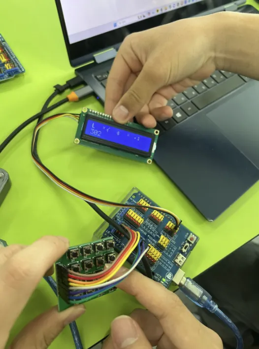
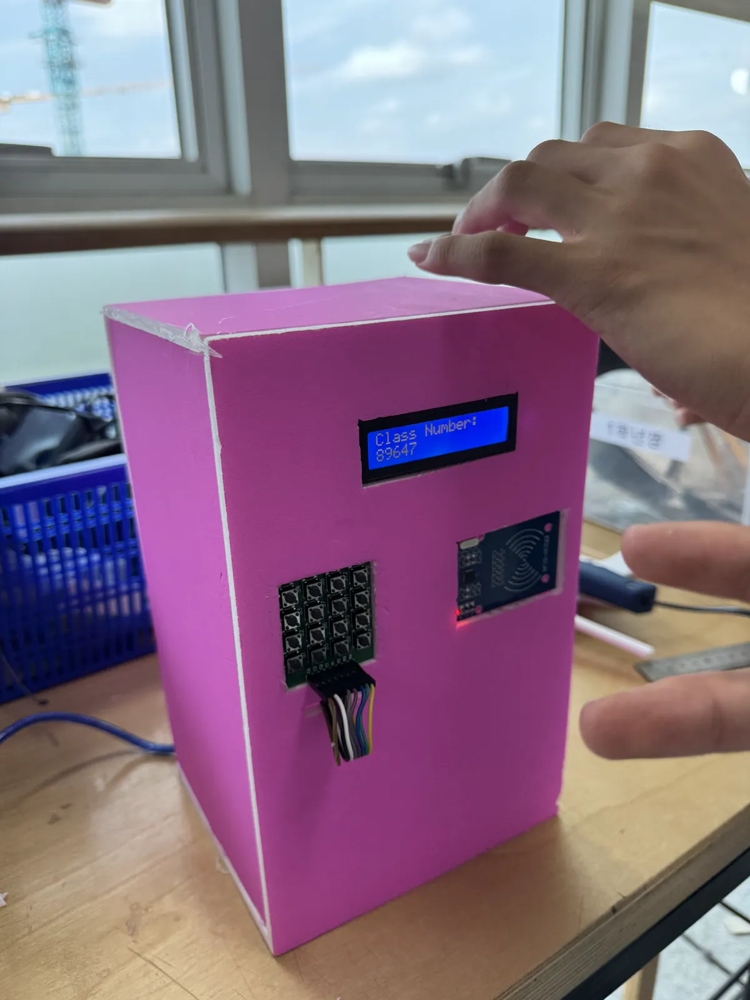
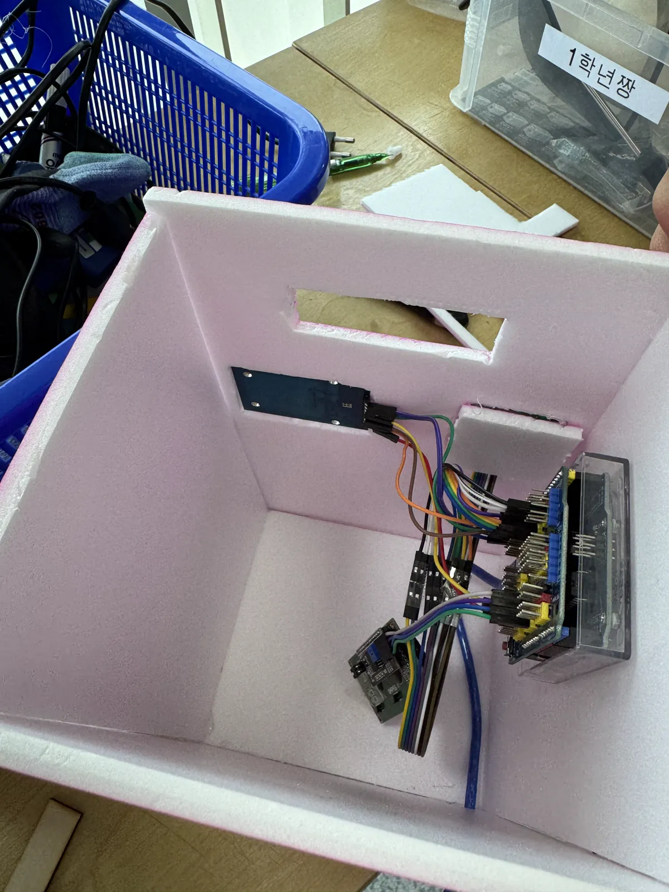
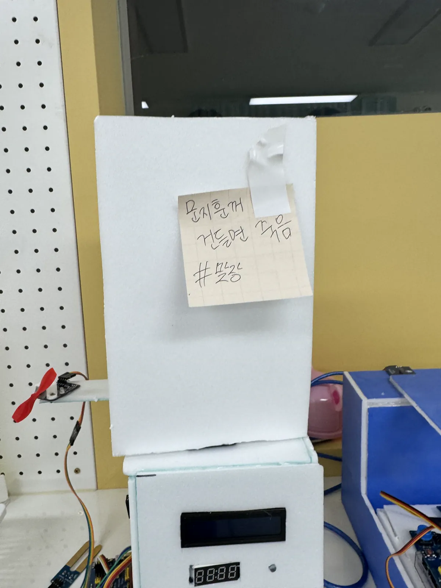
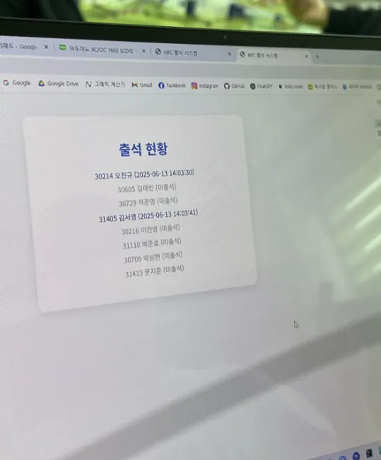

프로젝트 개요
NFC 태그를 활용한 스마트 출석 체크 시스템입니다. 아두이노로 NFC
리더를 제어하고 라즈베리파이로 데이터를 처리 및 저장하는 IoT
구조로 설계했습니다.
주요 기능 / 내용
- NFC 태그 인식 및 사용자 인증
- 아두이노 RC522 NFC 모듈 연동
- 출석 데이터 저장
- 실시간 출석 현황 웹 대시보드
- 아두이노 ↔ 라즈베리파이 시리얼 통신
- 4x4 매트릭스 키패드로도 학번을 입력해 출석 가능
프로젝트 사진

LCD·키패드 모듈 테스트

출석 체크 시스템 케이스 시제품 — 정면

케이스 내부 하드웨어와 배선

출석 체크 시스템 케이스 시제품 — 외형

실시간 출석 현황 웹 화면
나의 역할
팀장 · 6인 팀
- 전시
- 기획
- 프론트엔드 전체 개발
- 백엔드 전체 개발
- QA & 디버깅
- 아두이노 프로그래밍
- 아두이노 배선
- 아두이노–라즈베리파이 시리얼 통신
- API 통신
- 그 외 다수